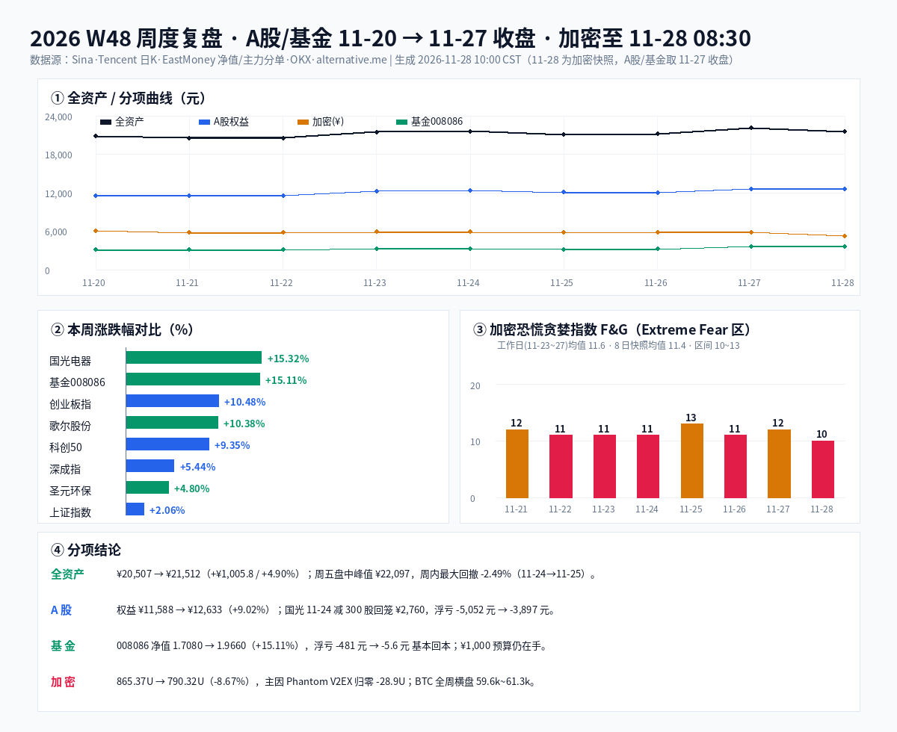

A股/基金 11-20 收盘 → 11-27 收盘 · 加密至 11-28 08:30
11-28 10:10 归档
第48周 持仓与市场情绪复盘大结案
A股 + 场外基金(1,841.62 份) + 加密现货全口径。本周关键：11-25 跌停 168 家的恐慌极值 → 11-27 涨停 1,367 家的暴力反包。
全资产合计
¥21,512
周 +1,006 元 (+4.90%)
A股权益（含回笼现金）
¥12,633
周 +1,045 元 (+9.02%)
基金 008086
¥3,621
净值 +15.11%（浮亏 -5.6 元，基本回本）
加密现货
790.32 U
周 -75.05 U (-8.67%)

一、总资产与盈亏走势
A股权益¥11,588 → ¥12,633 +9.02%
持仓市值 / 回笼现金¥11,588→¥9,873 / +¥2,760
基金 008086（1.7080→1.9660）¥3,145 → ¥3,621 +15.11%
加密（865.37U→790.32U）¥5,773 → ¥5,259 -8.91%
全资产¥20,507 → ¥21,512 +¥1,006 (+4.90%)
回撤体检：周五峰值 ¥22,097（+7.8%）；全资产 11-24 峰值 21,601 → 11-25 谷底 21,062，最大回撤 -2.49%；A股权益 -2.72%。远小于 W47 的 -15.99%。
浮亏收敛：A股 -5,052（-30.36%）→ -3,897（-28.30%）；基金 -481（-13.26%）→ -5.6（-0.15%）；A股+基金合计 -5,533 → -3,903（+¥1,630）。
浮亏收敛：A股 -5,052（-30.36%）→ -3,897（-28.30%）；基金 -481（-13.26%）→ -5.6（-0.15%）；A股+基金合计 -5,533 → -3,903（+¥1,630）。
大盘：上证 +2.06% / 深成 +5.44% / 创业板 +10.48% / 科创50 +9.35%。
结构两段：11-25 涨 561 : 跌 4,379、跌停 168 家、成交缩至 13,174 亿（周内地量）→ 11-27 涨 5,025 : 跌 181、涨停 1,367 / 跌停 1、个股中位数 +6.75%、成交 19,998 亿（+52%）。属极端资金驱动 V 形修复，不是趋势反转。
结构两段：11-25 涨 561 : 跌 4,379、跌停 168 家、成交缩至 13,174 亿（周内地量）→ 11-27 涨 5,025 : 跌 181、涨停 1,367 / 跌停 1、个股中位数 +6.75%、成交 19,998 亿（+52%）。属极端资金驱动 V 形修复，不是趋势反转。
二、三大持仓 + 基金体检
圣元环保 300867 500 股 @21.80
🟠 反抽离场
周 +4.80%（13.54→14.19），区间 13.16~14.34（振幅 8.71%）；11-26 最低 13.16 创阶段新低，11-27 靠普涨 +6.05% 反抽。浮亏 -3,805 元 (-34.91%)。
均线：MA5 13.76 / MA10 14.16 已收复；MA20 14.92 / MA60 15.45 压制。硬止损 14.90 仍失守 -4.77%（第 8 个交易日）。
主力（东财周 -331 万）：超大 -81 万 / 大 -250 万 / 中 -621 万 / 小 +952 万 → 机构零承接、散户接货。反弹无机构背书。
均线：MA5 13.76 / MA10 14.16 已收复；MA20 14.92 / MA60 15.45 压制。硬止损 14.90 仍失守 -4.77%（第 8 个交易日）。
主力（东财周 -331 万）：超大 -81 万 / 大 -250 万 / 中 -621 万 / 小 +952 万 → 机构零承接、散户接货。反弹无机构背书。
国光电器 002045 300 股 @9.567
🟢 资金转多 · 持有
周 +15.32%（8.03→9.26），区间 7.68~9.62（振幅 24.16%）。11-23 地天板（开 7.81 / 低 7.68 / 收 8.83 +9.96%）。浮亏仅 -92 元 (-3.21%)。
均线：MA5 8.89 / MA10 9.22 / MA60 9.12 收复，MA20 9.60 压制 -3.6%。防守 8.90 安全垫 +4.05%。
主力（东财周 +5,531 万）：超大 +4,667 万 / 大 +864 万 / 中 -7,634 万 / 小 +2,103 万。11-26~11-27 超大单连续净买 +176 / +602 万 = 温和回补，中户派发。结构性真吸货。
均线：MA5 8.89 / MA10 9.22 / MA60 9.12 收复，MA20 9.60 压制 -3.6%。防守 8.90 安全垫 +4.05%。
主力（东财周 +5,531 万）：超大 +4,667 万 / 大 +864 万 / 中 -7,634 万 / 小 +2,103 万。11-26~11-27 超大单连续净买 +176 / +602 万 = 温和回补，中户派发。结构性真吸货。
歌尔股份 002241 已清仓 20.47 · 观察池
👀 只看不做
周 +10.38%（21.00→23.18），区间 20.58~23.42。主力（东财周 +4.43 亿）：超大 +2.02 亿 / 小单 -4.38 亿 = 散户狂抛、机构全接。
卖飞成本扩大至 +13.24%（20.47 vs 23.18），若 600 股在场本周多赚 ¥1,626。MA20 23.33 仅差 -0.7% 未破。
卖飞成本扩大至 +13.24%（20.47 vs 23.18），若 600 股在场本周多赚 ¥1,626。MA20 23.33 仅差 -0.7% 未破。
华夏5G通信ETF联接A 008086 1,841.62 份 @1.9690
🟢 右侧可加仓
净值 1.7080 → 1.9660（周 +15.11%），市值 ¥3,621，浮亏 -5.6 元（-0.15%），基本回本。
穿透 515050：0.576 → 0.657 (+14.06%)，11-27 涨停 成交 9.65 亿（放量近 2 倍）、换手 8.68%。MA5 0.611 / MA10 0.604 / MA20 0.637 全收复，MA60 0.836 仍压制 -21.4%。
预算：剩 ¥1,000，11-27 右侧双条件（成交额 ≥6.5 亿 + 站回 MA10）首次成立 → 11-30 分两笔。
穿透 515050：0.576 → 0.657 (+14.06%)，11-27 涨停 成交 9.65 亿（放量近 2 倍）、换手 8.68%。MA5 0.611 / MA10 0.604 / MA20 0.637 全收复，MA60 0.836 仍压制 -21.4%。
预算：剩 ¥1,000，11-27 右侧双条件（成交额 ≥6.5 亿 + 站回 MA10）首次成立 → 11-30 分两笔。
三、交易纪律得失（量化机会成本）
✅ 做对
① 11-24 国光减 300 股（约 9.20）兑现长上影，敞口减半；② 两只亏损股全程零补仓；③ 基金 ¥1,000 预算按住，等双条件成立；④ 加密零杠杆零挂单，未抄底。
❌ 欠账
① 圣元 14.90 破位第 8 日，清仓指令第 5 次未执行（当日侥幸 +6.05%，按 13.44 计少收 ¥375）；② 国光计划 600 股全清，实际只减 300 股（半执行），11-25 冲高 9.62 亦未按预案减 150 股；③ 预案与执行脱钩已成 W46/W47/W48 三周同一模式。
结构性结论：若 11-23 按计划全清（圣元 13.40 / 国光 7.81），到 11-27 将少赚 ¥395 + ¥870 = ¥1,265。本周「不执行」在结果上躲过了机会成本，但这是幸存者偏差——一周内出现「跌停 168 → 涨停 1,367」概率极低。持仓 +9.02% 仍跑输创业板 1.46 pct，本周赚的是贝塔不是阿尔法。
四、加密货币全周情绪扫描
F&G（工作日 11-23~27）均值 11.6 · 区间 10~13 · 全程 Extreme Fear
BTC$59,088.9 → $59,988.6 (+1.52%)
区间 59.6k~61.3k（振幅 2.8%）横盘
区间 59.6k~61.3k（振幅 2.8%）横盘
ETH / SOL+2.40% / +3.84%
1,626→1,665 / 69.10→71.75
1,626→1,665 / 69.10→71.75
多空比（BTC / SOL）3.06→2.98 / 2.69→2.75
Phantom V2EX 归零：11-27 $29.21 → 11-28 $0.34（-$28.87 / -98.8%），占本周加密亏损 38%。分账户：Binance $409.77 / Bitget $236.24 / Pionex $143.96 / Phantom $0.34。
判断：情绪在地板上横一周、币价 59~61k 横盘、OI 20.0→19.2 亿收缩 = 筑底特征，但筑底≠上涨。SOL $71.75 距 $145 目标 +102%，本周无操作必要。
判断：情绪在地板上横一周、币价 59~61k 横盘、OI 20.0→19.2 亿收缩 = 筑底特征，但筑底≠上涨。SOL $71.75 距 $145 目标 +102%，本周无操作必要。
五、下周（11-30 起）作战计划
- 圣元 500 股 — 唯一动作是走：反抽 14.85~15.00（MA20 14.92 ∩ 硬止损 14.90）全清；开盘已在 14.90 上方则冲高回落破 14.60 走；跌破 13.33 无条件全清。严禁补仓、严禁下移止损。
- 国光 300 股 — 唯一可持有：防守 8.90 收盘破清仓；破 MA10 9.22 减 150 股；站上 MA20 9.60 看 11.30；回到成本 9.567 上方先减半回本。涨停次日的次日高开是派发窗口，不是加仓信号。
- 基金 008086（剩 ¥1,000）：右侧 11-30 不破 0.604 且不追高开 → 投 500 元；左侧回踩 0.630~0.645 缩量不破 MA20 → 再 500 元；放量大阴无下影 → 观望。三档互斥。
- 加密 790.32 U — 不动：不挂左侧止损单、不预挂止盈锁流动性；F&G > 25 且 BTC 站回 $62,234 才评估加仓。
- 歌尔观察池：11-30 不破 22.41（MA10）且收盘站上 23.33（MA20），两条同时成立才用清仓资金小仓 ≤¥3,000 试探。
- 总仓位：可动用现金约 ¥2,760。跌停家数回落至 30 家以下且个股中位数连续 2 日为正之前，除国光外不开新仓。
数据源：Sina MoneyFlow / 涨跌家数 · Tencent 日K+快照 · EastMoney fflow/daykline & 基金净值 · OKX · alternative.me
生成于 2026-11-28 10:10 CST · AlphaPilot
生成于 2026-11-28 10:10 CST · AlphaPilot